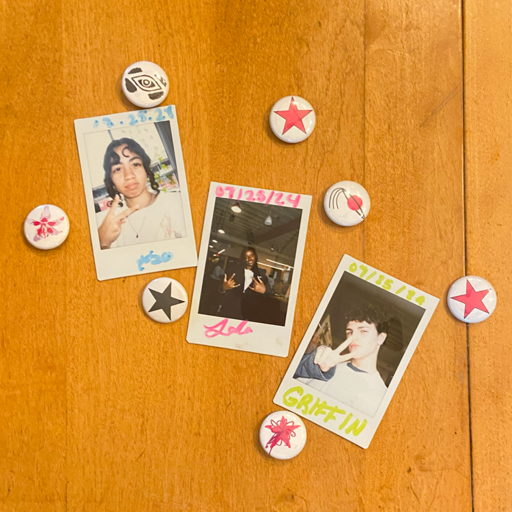

Hello I'm Griffin. I'm a 15-year-old student at Boston Latin Academy going into sophomore year. I'm super interested in the arts as well as science and biology. I have always been interested in everything from sketching and music all the way to creating my own graphics and clothes. I enjoy travelling, the color green, my cat Pearl (as seen below), the arts, hanging out with my friends, nature, and science.
Even before my time at TSN I have been producing art pieces and exploring different mediums. I have created graphics using many different softwares from Adobe Illustrator to Procreate. Here are some examples of my personal works outside of the DDI program.